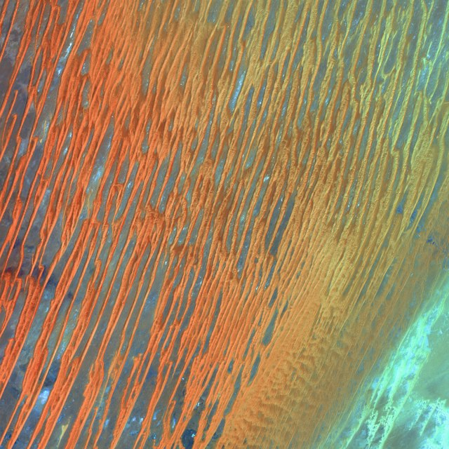

Label = top vs bottom half of log(downloads/views). 5-fold out-of-fold logistic regression, averaged over 3 seeds; the brain features are TRIBE v2's predicted cortex pooled into 9 region groups × 6 statistics (54 numbers), the baseline is the raw vision backbone embedding of the same clip. Green border = the brain's call matched reality, red = it did not.
brain P(top half) 0.86
actually popular · -4.68 log dl/view
brain P(top half) 0.84
actually not · -5.49 log dl/view
brain P(top half) 0.78
actually not · -5.99 log dl/view
brain P(top half) 0.78
actually popular · -4.66 log dl/view
brain P(top half) 0.77
actually not · -5.39 log dl/view

brain P(top half) 0.76
actually not · -5.27 log dl/view
brain P(top half) 0.75
actually popular · -4.42 log dl/view
brain P(top half) 0.75
actually not · -5.53 log dl/view
brain P(top half) 0.75
actually popular · -5.02 log dl/view
brain P(top half) 0.75
actually popular · -5.05 log dl/view
brain P(top half) 0.74
actually not · -5.38 log dl/view
brain P(top half) 0.74
actually popular · -3.63 log dl/view
brain P(top half) 0.22
actually popular · -5.04 log dl/view
brain P(top half) 0.22
actually not · -5.55 log dl/view
brain P(top half) 0.23
actually not · -6.04 log dl/view
brain P(top half) 0.23
actually popular · -4.80 log dl/view
brain P(top half) 0.23
actually not · -5.86 log dl/view
brain P(top half) 0.24
actually popular · -5.07 log dl/view
brain P(top half) 0.24
actually not · -5.95 log dl/view
brain P(top half) 0.24
actually not · -6.19 log dl/view
brain P(top half) 0.25
actually not · -5.75 log dl/view
brain P(top half) 0.25
actually not · -6.13 log dl/view
brain P(top half) 0.25
actually not · -5.73 log dl/view
brain P(top half) 0.26
actually not · -6.24 log dl/view
Reading: the cortex features land in the same league as the 1,408-number vision embedding (on AADB the raw embedding's PCA is a few points ahead; the brain's gain is that every call is interpretable — each call can be traced to named brain areas. Popularity on Unsplash is noisy (it depends on search placement as much as on the photo), so neither feature set should be expected to go much higher.